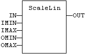
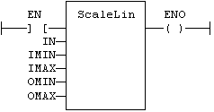

Function
Scaling - linear conversion.
|
Name |
Type |
Description |
|
IN |
REAL |
Real value. |
|
IMIN |
REAL |
Minimum input value. |
|
IMAX |
REAL |
Maximum input value. |
|
OMIN |
REAL |
Minimum output value. |
|
OMAX |
REAL |
Maximum output value. |
|
Name |
Type |
Description |
|
OUT |
REAL |
Result: OMIN + IN * (OMAX - OMIN) / (IMAX - IMIN). |
|
Inputs |
OUT |
|
IMIN >= IMAX |
= IN |
|
IN < IMIN |
= IMIN |
|
IN > IMAX |
= IMAX |
|
other |
= OMIN + IN * (OMAX - OMIN) / (IMAX - IMIN) |
In LD language, the operation is executed only if the input rung (EN) is TRUE. The output rung (ENO) keeps the same value as the input rung. In IL, the input must be loaded in the current result before calling the function.
OUT := SCALELIN (IN, IMIN, IMAX, OMIN, OMAX);

The function is executed only if EN is TRUE.
ENO keeps the same value as EN.
